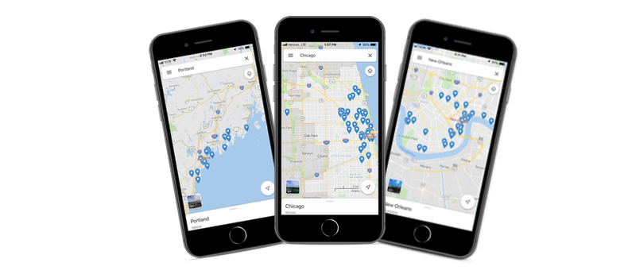
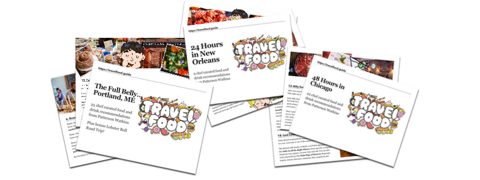

Start Here | All Cities | Articles
"Where should we go to eat?"
When you're visiting a new city, figuring out where to have breakfast, lunch, dinner, and drinks can feel like a total gamble.
If you're a food-obsessed traveler like me, you want to make sure every meal is memorable and represents the best of local fare. Yelp reviews are hit or miss (mostly miss), and even the top 10 lists you'll find on Google can leave you guessing.
When you have just a few days to enjoy in a new place, how do you know which are the overhyped, touristy spots you can skip? How do you make sure every meal is maximum-delicious?
You don't have to waste your precious travel meals on something underwhelming because you're tired, or unprepared, or overwhelmed with choices.
Don't guess - let a professional chef be your guide!

Imagine if your your trip was planned around local and culturally relevant foodstuffs, from a list that was personally vetted by a professional chef (instead of a Yelper or amateur food blogger)?
Hi, I'm Patterson! I'm a professional chef and independent recipe developer based in Philadelphia and when it comes to travel, my #1 priority is knowing where I can get the best eats at all times.
Each time my husband Alex and I book a trip, I'll spend hours (sometimes days!) diving deep into every single nugget of food knowledge I can find...and I map it out, literally.

Then, once we're on the ground, I use my chef-y senses to sniff out new culinary treats. I make friends with chefs and restaurant owners and bartenders and other local foodies to find exciting new things that you won't find on any of the review sites. And then the best stuff gets added to the map!
Of course, we still do other "non-food" activities too. We love walking tours, museums, live music, etc.
But for us, food always comes first.
Great food will enhance any travel experience by 10x. Food is personal, an expression of culture and people. To fully experience a place, food is a good starting point. Great food is an experience that everyone can and should be able to enjoy.
Food truly is the universal language. And everybody has to eat. 😋

"I travel to explore and see the sights, but what I really want to do is eat the best flavors a city has to offer. Chef Patterson freakin delivers. Her research has helped me eat deliciously in several cities much easier and more delicious." - Joel Hooks
Next time you travel, you can eat like a chef too!
From your first sip after you arrive, to the last bite before you head home, you can use one of my guides & maps to plan your own food adventures!
Our first three guides are available now:
Each of these guides (complete with interactive maps) are carefully curated from the giant list of more than 1000 places I've researched and visited. For each city, you can choose from a 24 hour guide or a 48 hour guide. For select cities and destinations, you can get a full week's worth of chef-tested recommendations!
From the best dive bars to the highest end dining experiences, you can either build a custom itinerary based on the list or just use the map to see which of my recommendations is closest to you.

More guides are on the way, too, including our favorite food cities: Lisbon/Porto, Cape Town/Stellenbosch, Prague, Portland Oregon, Washington DC, and more.
For the most adventurous food travelers, we're working on guides from epic food destinations like Japan and India. Wherever you are, and whatever your favorite flavors may be, I have a map for you.
My goal is to make your travels delicious, too, and wherever you are going to ensure you never wonder where you should go to eat. Sign up for the list below, or grab a guide and plan your next trip around it.
I promise, you won't go hungry.
Deliciously yours,
Chef Patterson Watkins
📸IG @cheftested
Check out all of my favorite Travel Food cities:
Special Thanks
Website Design inspired by Lauren Hallden's Travel Log.